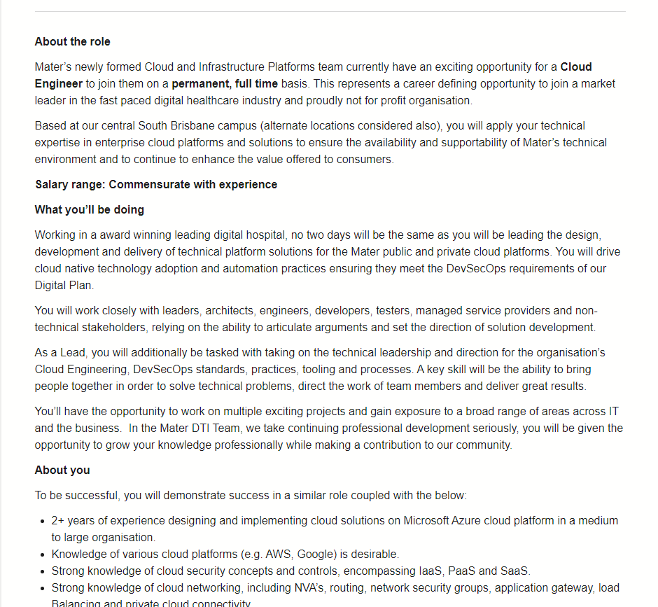

Idea Job
The role I searched from Seek.com was Cloud Engineer. It popped out around 80 job vacancies listed from last 24 hr across the country, from which the results were astonishing under the current job market condition. One of these job ads I had my eyes on was a role to create a cloud-based system platform to deliver the outstanding healthcare solutions in a modern digitised hospital based in Brisbane. I summarised and commented some key requirements from its selection criteria showed below.
- Minimum 2 years’ experience on Azure applications in previous jobs. Azure, a cloud-based operation platform developed by Microsoft is now ubiquitous in cloud computing service. Similar one is Amazon Web Services (AWS). Obtaining certificates from these two providers is the entry ticket to be a cloud engineer.
- Minimum 2 years’ experience on Azure applications in previous jobs. Azure, a cloud-based operation platform developed by Microsoft is now ubiquitous in cloud computing service. Similar one is Amazon Web Services (AWS). Obtaining certificates from these two providers is the entry ticket to be a cloud engineer.
- Extensive experience CI/CD code. Team built coding, collaborations, GitHub exp. is a must-have. Knowing Circleci, a leading CI/CD tool can give you an edge.
- Masterful in Python, PowerShell. This is directly related to programming. So coding ability and experience is fundamental and crucial to this type of job.
- Understand network TCP/IP, DNS, STMP etc. An in-depth understanding of network protocols, diagnosis, maintenance, debugging is highly relevant to this role.
- ARM Templates Automating deployment of objects/ resources
- DevSecOps experience Integrate security functions with development and operation
Salary ranges from 90k -120k
In summary, from what I've seen maybe this is just a tip of the iceberg but it's a high in-demand occupation needs more people to be qualified. This job has a bright future and decent remuneration and that’s what excites me. But extensive experience and expertise knowledge requirements indicate its high entry level. To walk towards that level, it’s a long way to go from where I’m standing now. However, I now have a road map after I did this research and job analysis. Solidifying my programming skill and knowledge about database, networking, software engineering is something I can learn at an Uni. Completing certification and gaining practical experience in Azure or AWS is probably what I need to do outside the Uni.